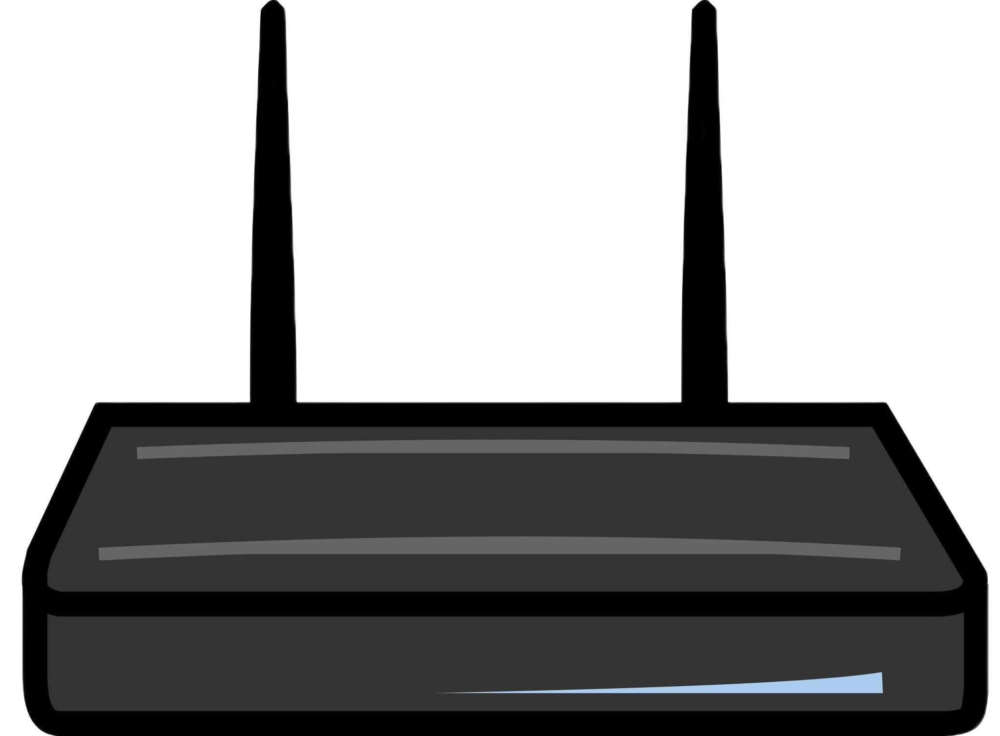
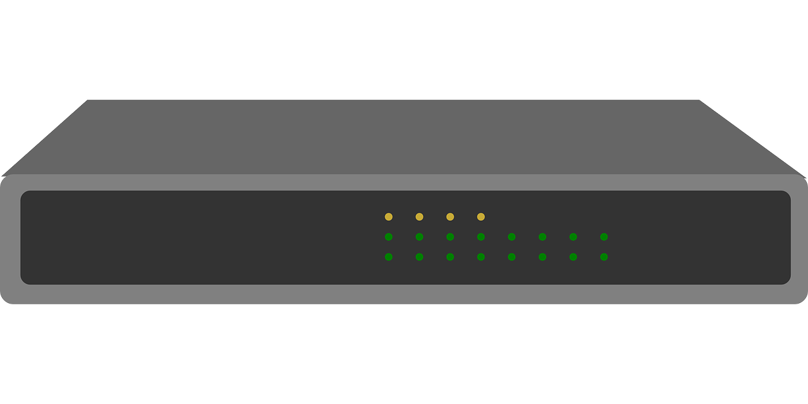
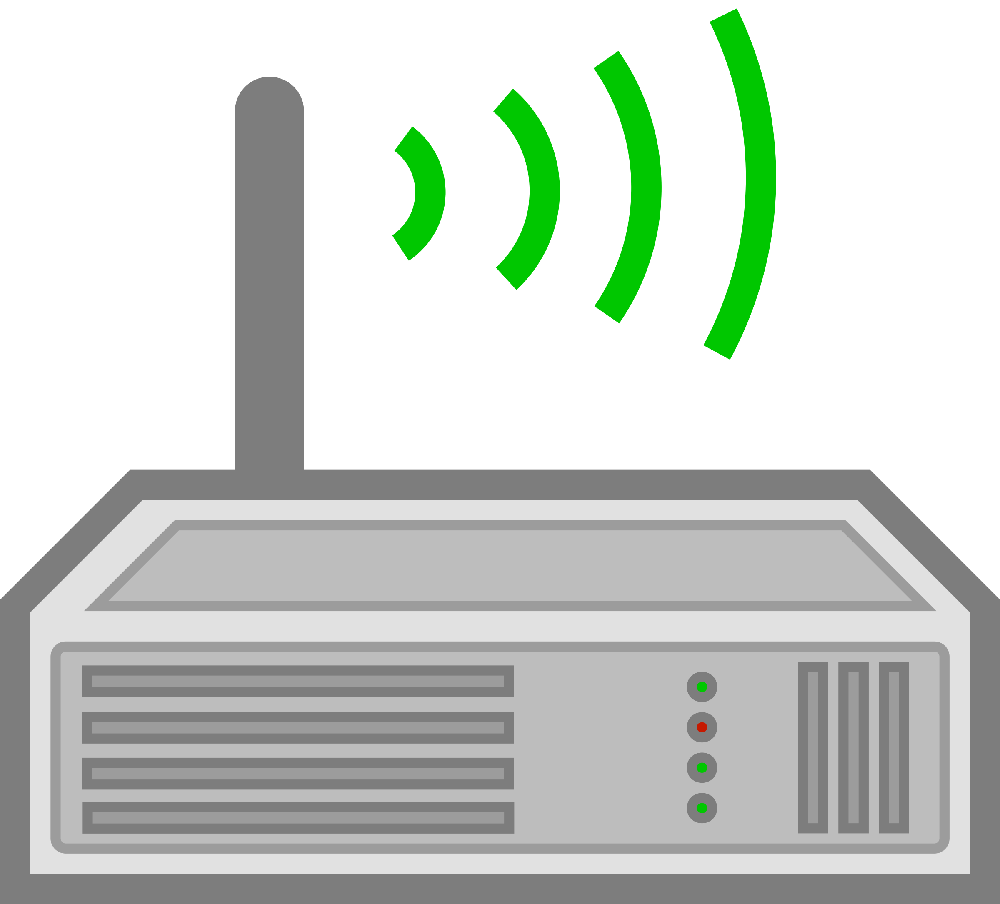

Сетевое оборудование
Маршрутизаторы (Routers)
Маршрутизаторы - это устройства, которые направляют трафик между различными сетями, используя таблицы маршрутизации и протоколы, такие как BGP (Border Gateway Protocol) или OSPF (Open Shortest Path First). Они также могут обеспечивать защиту сети с помощью встроенных функций брандмауэра и VPN (Virtual Private Network).
Коммутаторы (Switches)
Коммутаторы создают сетевые соединения внутри одной сети и работают на уровне данных (канальный уровень модели OSI). Они могут быть управляемыми, предоставляя возможности настройки сети, или неуправляемыми, предлагая базовую функциональность подключения.
Модемы (Modems)
Модемы преобразуют цифровые данные компьютера в аналоговый сигнал для передачи по телефонным линиям (или наоборот), что позволяет подключаться к интернету. Существуют различные типы модемов, включая кабельные, DSL и оптоволоконные модемы.
